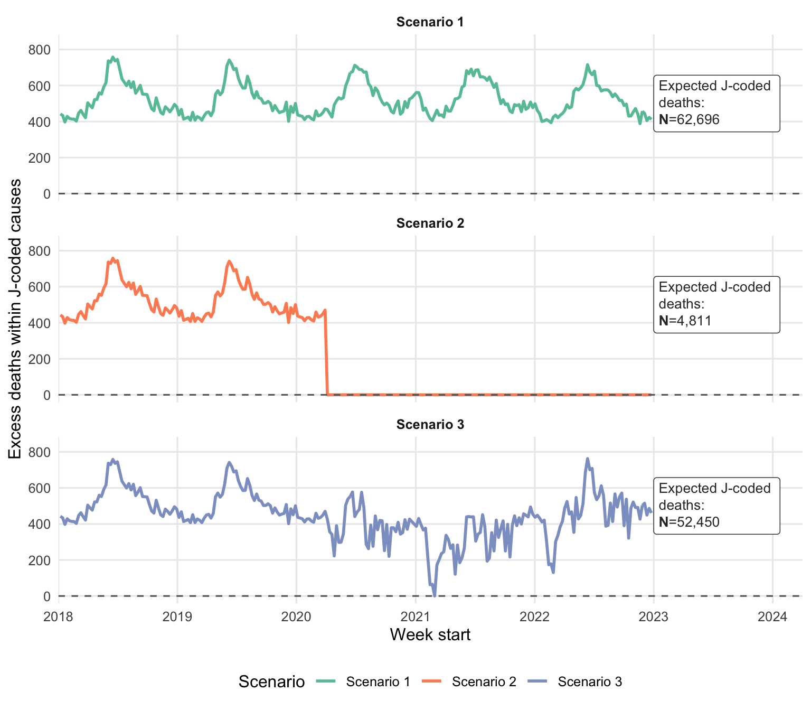
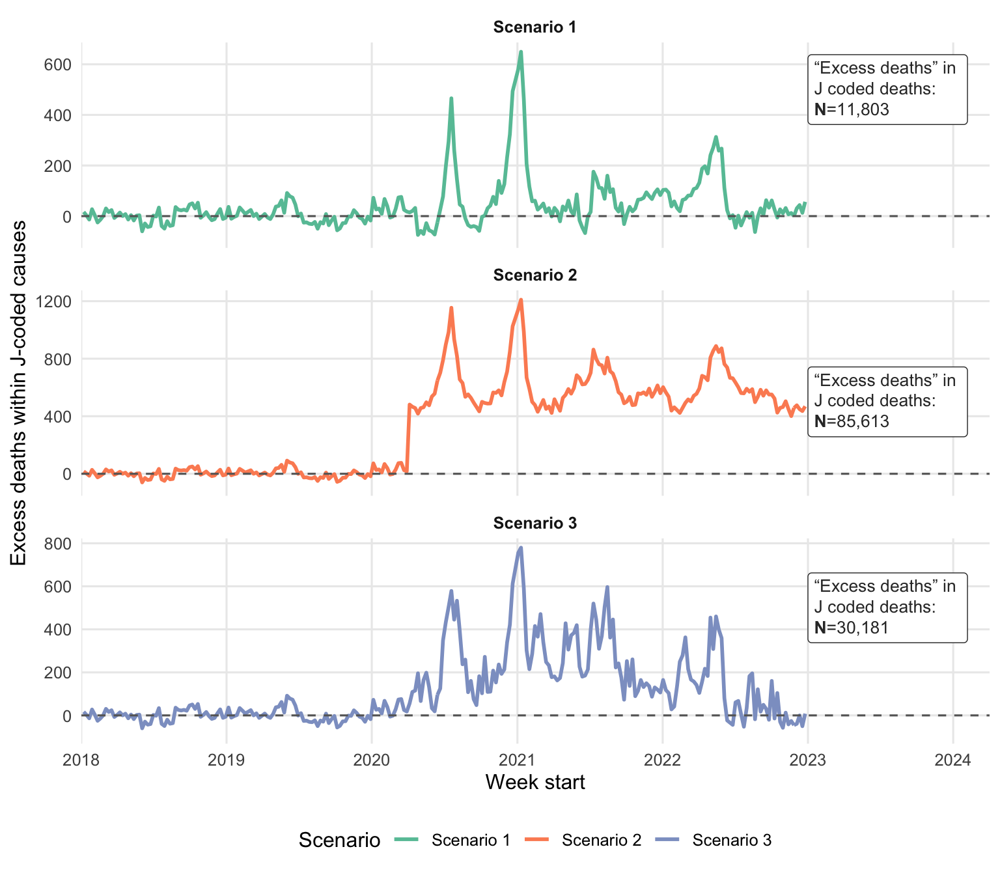

Scenario | Assumption | Expected deaths (counterfactual) | Excess J-coded deaths |
|---|---|---|---|
1. Standard excess | Influenza at pre-pandemic levels | 62,696 | 11,803 |
2. Upper bound | No respiratory deaths during pandemic | 4,811 | 85,613 |
3. NPI-adjusted | Influenza suppressed proportional to COVID-19 intensity | 52,450 | 30,181 |
Misclassification of COVID-19 deaths under respiratory (J-code) causes: Adjusting excess mortality estimates for influenza suppression during the pandemic in South Africa, 2020 – 2022
Research
modelling
respiratory
J-codes
excess-mortality
COVID-19
Estimating hidden COVID-19 deaths misclassified under ICD-10 J-codes in South Africa using scenario-based adjustments for influenza suppression during non-pharmaceutical interventions
Abstract
Background. Excess mortality calculations have been widely used to estimate the true burden of COVID-19 deaths. For deaths coded under ICD-10 Chapter J (diseases of the respiratory system), standard excess mortality methods assume that influenza and other respiratory disease mortality continued at pre-pandemic levels. However, influenza circulation virtually disappeared during the pandemic owing to non-pharmaceutical interventions (NPIs), making this assumption untenable for cause-specific attribution.
Objectives. To estimate the number of COVID-19 deaths misclassified under J-codes in South Africa (2020 – 2022) by modelling expected respiratory mortality under three scenarios that account for the suppression of influenza transmission during the pandemic.
Methods. Weekly J-coded deaths from South African vital registration data (2015 – 2022) were analysed. A negative binomial regression model was fitted to pre-pandemic data (2015 – 2019), adjusting for epidemiological week, age group, sex, J-code subgroup, and province, with a population offset. Eight candidate model specifications were compared using Akaike information criterion and root mean squared error. Expected deaths during the pandemic period (April 2020 onwards) were estimated under three scenarios: (1) standard excess (influenza unchanged); (2) upper bound (all J-codes attributed to COVID-19); and (3) NPI-adjusted, in which expected respiratory deaths were scaled by the inverse of the COVID-19 mortality trend derived from seasonal-trend decomposition (STL).
Results. Scenario 1 yielded 11 803 excess J-coded deaths, Scenario 2 yielded 85 613, and Scenario 3 (NPI-adjusted) yielded 30 181. Corresponding expected (counterfactual) J-coded deaths during weeks with excess were 62 696, 4 811, and 52 450, respectively. The NPI-adjusted estimate was 2.6-fold higher than the standard excess approach.
Conclusion. The standard excess mortality method likely underestimates the number of COVID-19 deaths misclassified under respiratory J-codes. Accounting for the near-absence of influenza during the pandemic substantially increases cause-specific COVID-19 mortality estimates, without altering overall excess death totals. These findings have implications for accurate cause-of-death attribution in pandemic settings with limited diagnostic testing capacity.
Keywords: excess mortality, COVID-19, J-codes, respiratory deaths, influenza, non-pharmaceutical interventions, cause of death, South Africa
1 Introduction
COVID-19 is a respiratory illness caused by the SARS-CoV-2 virus that in severe cases progresses to pneumonia, hypoxia, or acute respiratory distress syndrome (ARDS) leading to death.(1) Influenza A and B viruses, along with other respiratory pathogens, produce overlapping clinical presentations with COVID-19. Since medical certifiers in South Africa (SA) often had to assign a cause of death without a confirmatory SARS-CoV-2 test — particularly for the nearly half of all deaths that occur outside of health facilities — many COVID-19 deaths were plausibly coded under ICD-10 Chapter J (diseases of the respiratory system), hereafter referred to as ‘J-codes’.
Respiratory pathogens circulate seasonally in SA during the Southern Hemisphere winter (May – August), with sentinel surveillance and influenza-like illness (ILI) indicators peaking in this period.(2) During the COVID-19 pandemic, however, influenza circulation virtually disappeared — a pattern documented worldwide and confirmed by the National Institute for Communicable Diseases (NICD) sentinel surveillance in SA.(2–4) This collapse was driven by widespread NPIs including mask-wearing, physical distancing, and movement restrictions.(5) Given that influenza has a lower basic reproduction number (\(R_0\)) than SARS-CoV-2, NPIs that were insufficient to prevent COVID-19 transmission were highly effective at suppressing influenza.(5)
Excess mortality has been widely adopted to estimate the true pandemic death toll, particularly in settings where testing capacity was constrained.(1,6) For J-coded deaths specifically, the standard excess mortality approach estimates expected deaths based on pre-pandemic trends and attributes the difference (observed minus expected) to COVID-19. This implicitly assumes that influenza and other non-COVID-19 respiratory deaths continued at pre-pandemic levels throughout the pandemic.
This assumption is problematic. If influenza circulation was virtually absent during the pandemic, then many of the ‘expected’ J-coded deaths would not have occurred, and the true number of COVID-19 deaths misclassified under J-codes would be larger than the standard excess estimate suggests.(7) Furthermore, the limited testing in SA and the resulting default reasoning by medical certifiers to assign respiratory codes to clinically compatible deaths likely compounded this misclassification.
We estimated the number of COVID-19 deaths misclassified under J-codes in SA during 2020 – 2022 using three scenarios that progressively account for the suppression of influenza during the pandemic.
2 Methods
2.1 Study design and data sources
This was a retrospective analysis of nationally registered deaths in SA from 2015 to 2022. Death notification data were obtained from the vital registration system maintained by the Department of Home Affairs and processed by Statistics South Africa, with cause-of-death coding performed according to standard ICD-10 protocols. Deaths coded under ICD-10 Chapter J (J00 – J99: diseases of the respiratory system) were extracted for analysis. Deaths coded under U07 (COVID-19) were extracted separately for temporal trend decomposition.
Mid-year population estimates (2015 – 2022), disaggregated by province, sex, and age group, were obtained from Statistics South Africa to provide denominator data for the negative binomial model with a population offset.
2.2 Statistical modelling
A negative binomial regression was fitted to pre-pandemic data (epidemiological weeks 1 – 52, 2015 – 2019) to estimate expected weekly J-coded deaths. The outcome variable was the count of deaths in stratum-specific cells defined by epidemiological week, age group, sex, J-code subgroup, and province.
Eight candidate model specifications were evaluated, including:
- Simple main-effects models with and without Fourier seasonal terms
- Models with demographic interaction terms (sex × age group × J-code subgroup)
- Province-stratified Fourier models with population offsets
- Generalised linear mixed models (glmmTMB) with province-level random effects and polynomial trends
- Generalised additive models (GAMs) with smooth terms for epidemiological week and year
Models were compared using the Akaike information criterion (AIC), Bayesian information criterion (BIC), and root mean squared error (RMSE) evaluated on province-level aggregated predictions for the training period (2015 – 2019).
The selected model was a negative binomial regression (MASS::glm.nb) with the following specification:
\[ \log\bigl(E(Y_{p,a,s,j,t})\bigr) = \beta_0 + \text{offset}\bigl(\log(\text{pop}_{p,a,s,t})\bigr) + f(\text{province}_p) + f(\text{sex}_s) + f(\text{agegroup}_a) + f(\text{Jcode}_j) + f(\text{epiweek}_t) + f(\text{year}_t) \]
where \(Y_{p,a,s,j,t}\) denotes the death count in province \(p\), age group \(a\), sex \(s\), J-code subgroup \(j\), and epidemiological week \(t\), and \(f(\cdot)\) denotes fixed categorical effects. Province-level random effects and more complex interaction models did not materially improve model fit (AIC, BIC) or change estimates meaningfully, so the simpler specification was retained for interpretability.
2.3 Scenario definitions
Three scenarios were modelled to estimate excess J-coded deaths attributable to COVID-19 during the pandemic period (April 2020 onwards):
Scenario 1 (Standard excess). The conventional approach: expected J-coded deaths were predicted from the fitted model and subtracted from observed deaths. This assumes influenza and other respiratory mortality continued at pre-pandemic levels.
Scenario 2 (Upper bound). All J-coded deaths during the pandemic period were attributed to COVID-19, with expected deaths set to zero from April 2020 onwards. This represents the maximum possible misclassification estimate.
Scenario 3 (NPI-adjusted). Expected J-coded deaths were modulated by a time-varying factor reflecting the intensity of COVID-19 transmission, used as a proxy for NPI-driven suppression of influenza. The COVID-19 death time series (ICD-10 U07 code) was decomposed using seasonal-trend decomposition by LOESS (STL),(3) extracting trend and seasonal components:
\[ Y^{(i)}_{\text{COVID}} = \text{trend}^{(i)} + \text{seasonal}^{(i)} + \text{remainder}^{(i)} \]
The combined trend and seasonal components were normalised to the maximum value and inverted to create a suppression factor:
\[ \text{Suppression}^{(i)} = 1 - \frac{\text{trend}^{(i)} + \text{seasonal}^{(i)}}{\max\bigl(\text{trend} + \text{seasonal}\bigr)} \]
Expected J-coded deaths were then adjusted as:
\[ E^{*}(Y^{(i)}_J) = E(Y^{(i)}_J) \times \text{Suppression}^{(i)} \]
The rationale is that during peaks of COVID-19 transmission — when NPI adherence was highest — influenza and other respiratory pathogen circulation was maximally suppressed, so fewer J-coded deaths would have occurred from non-COVID-19 causes.
Excess deaths under each scenario were calculated as the cumulative sum of positive weekly differences between observed and expected deaths from April 2020 to December 2022.
2.4 Ethical considerations
This study used de-identified, routinely collected vital registration data. No individual-level data were accessed.
3 Results
3.1 Model selection
Among the eight candidate models, those with Fourier seasonal terms and population offsets generally outperformed models with epidemiological week as a categorical factor. The simple negative binomial model with province, sex, age group, J-code subgroup, epidemiological week (categorical), and year predictors was selected for its balance of parsimony and fit. Province-level RMSEs were comparable across the top-performing models.
3.2 Excess J-coded deaths by scenario
Scenario 1 (standard excess) estimated 11 803 excess J-coded deaths during the pandemic period, with 62 696 expected (counterfactual) respiratory deaths (Table 1). Scenario 2 (upper bound) estimated 85 613 excess deaths by attributing all pandemic-period J-coded deaths to COVID-19. The NPI-adjusted Scenario 3 estimated 30 181 excess J-coded deaths — 2.6 times higher than the standard approach — with 52 450 expected respiratory deaths during weeks of excess.
3.3 Expected and excess death trajectories
Figure 1 shows the predicted weekly J-coded deaths under each scenario. In Scenario 1, expected deaths remained at pre-pandemic seasonal levels throughout; in Scenario 2, they dropped to zero; and in Scenario 3, they were dynamically reduced during COVID-19 peaks, reflecting the inverse relationship between COVID-19 wave intensity and expected respiratory pathogen circulation.

Figure 2 presents the resulting excess J-coded deaths (observed minus expected) under each scenario. In Scenario 1, excess deaths were visible only during the most intense COVID-19 waves; in Scenario 3, the excess was broader and higher because expected respiratory deaths were suppressed during wave peaks; and in Scenario 2, the entire observed death series was attributed to COVID-19 from April 2020.

4 Discussion
This study demonstrates that the standard excess mortality approach likely underestimates the number of COVID-19 deaths misclassified under respiratory J-codes in SA. The NPI-adjusted scenario (Scenario 3) estimated 30 181 excess J-coded deaths — 2.6 times more than the 11 803 estimated under the conventional assumption that influenza mortality was unchanged during the pandemic.
The finding is consistent with the well-documented near-absence of influenza circulation during the pandemic in SA and globally.(2–4) If influenza was not causing deaths, then a substantial proportion of J-coded deaths during the pandemic periods must represent misclassified COVID-19 deaths, especially given SA’s limited SARS-CoV-2 testing capacity. This reasoning has been supported by multi-country studies demonstrating reductions in cause-specific respiratory mortality during COVID-19 pandemic periods.(7)
The Scenario 3 estimate (30 181) represents approximately 35% of the upper-bound Scenario 2 estimate (85 613), suggesting that while not all J-coded deaths during the pandemic were COVID-19, a meaningful proportion beyond that captured by the standard approach may have been. The true value likely lies between Scenarios 1 and 3, depending on how completely NPIs suppressed non-COVID-19 respiratory pathogens and the extent to which clinicians defaulted to J-codes in the absence of testing.
4.1 Implications for cause-specific attribution
Critically, adjusting the J-code excess does not change the total excess death estimate for SA, which is calculated from all-cause mortality.(1) Rather, it redistributes deaths among cause categories. Deaths that would have been classified as ‘background respiratory’ under Scenario 1 are instead attributed to COVID-19 under Scenario 3, thus improving cause-specific accuracy without altering the overall pandemic death toll.
This distinction is important for public health planning. Accurate cause-specific mortality data inform resource allocation, burden-of-disease estimates, and preparedness efforts for future pandemics.
4.2 Study strengths
This analysis used nationally representative vital registration data covering all registered deaths in SA. The comparison of eight model specifications provides transparency in model selection. The NPI-adjusted scenario (Scenario 3) offers a biologically plausible intermediate estimate grounded in the empirical observation that influenza circulation collapsed during the pandemic.
4.3 Study limitations
Several limitations warrant consideration. First, all J-codes (J00 – J99) were included in this analysis; restricting to more specific respiratory codes (J09 – J18, influenza and pneumonia) may yield more conservative estimates, as some J-codes (e.g. chronic lower respiratory diseases) are less likely to represent misclassified COVID-19.
Second, the NPI-adjusted method uses the inverse of the national COVID-19 mortality trend as a proxy for influenza suppression. This does not account for provincial variation in NPI adherence, wave timing, or the potentially non-linear relationship between COVID-19 intensity and influenza suppression.
Third, the suppression factor in Scenario 3 assumes that influenza deaths were reduced in direct, inverse proportion to COVID-19 wave intensity. While this is biologically plausible, the precise functional form of this relationship was not empirically estimated and would ideally incorporate pathogen-specific surveillance data.
Fourth, severe acute respiratory infection (SARI) and ILI surveillance data, which were influenced by changes in health-seeking behaviour during the pandemic, were not integrated into the model. A fourth scenario incorporating pre-pandemic influenza detection rates as predictors is planned and may provide more precise estimates.
Fifth, while vital registration coverage in SA is high, the analysis does not account for potential changes in registration completeness during the pandemic or for deaths that were never registered.
4.4 Recommendations
Incorporate pathogen surveillance. Future excess mortality models for respiratory deaths should integrate influenza and respiratory pathogen surveillance data as time-varying predictors. This would allow empirical estimation of the relationship between pathogen circulation and expected deaths, rather than relying on trend-based proxies.
Apply informative priors. The documented collapse of influenza circulation provides a strong prior that should inform J-code excess calculations. Bayesian approaches that formally incorporate this evidence may be warranted.
Improve death certification. Training clinicians in cause-of-death certification, expanding SARS-CoV-2 testing to include post-mortem diagnosis, and implementing electronic death registration with validation checks would reduce misclassification at source.
Extend to other cause categories. Similar misclassification may have occurred in other cause categories with clinical overlap with COVID-19 (e.g. diabetes, cardiovascular disease, tuberculosis). However, the assumption that these causes were suppressed by NPIs is weaker, and the analysis would need to account for health-system disruptions and behavioural changes.
5 Conclusion
The standard excess mortality approach for J-coded deaths underestimates the number of COVID-19 deaths misclassified under respiratory causes because it assumes influenza mortality continued at pre-pandemic levels despite documented influenza suppression. An NPI-adjusted approach that accounts for this temporal suppression produced an estimate 2.6-fold higher (30 181 v. 11 803 excess deaths) over the period April 2020 – December 2022 in SA. Incorporating respiratory pathogen surveillance data into excess mortality models would further refine these estimates and improve cause-specific mortality attribution in settings with limited diagnostic testing.
References
1.
Bradshaw D, Dorrington R, Laubscher R, Groenewald P, Moultrie T. COVID-19 and all-cause mortality in South Africa – the hidden deaths in the first four waves. South African Journal of Science. 2022 May;118(5/6). doi:10.17159/sajs.2022/13300
2.
Tempia S, Walaza S, Bhiman JN, McMorrow ML, Moyes J, Mkhencele T, et al. Decline of influenza and respiratory syncytial virus detection in facility-based surveillance during the COVID-19 pandemic, south africa, january to october 2020. Eurosurveillance. 2021;26(29):2001600. doi:10.2807/1560-7917.ES.2021.26.29.2001600 PubMed PMID: 34296675; PubMed Central PMCID: PMC8299743.
3.
Olsen SJ, Azziz-Baumgartner E, Budd AP, Brammer L, Sullivan S, Pineda RF, et al. Decreased Influenza Activity During the COVID-19 Pandemic — United States, Australia, Chile, and South Africa, 2020.
4.
Groves HE, Piché-Renaud PP, Peci A, Farrar DS, Buckrell S, Bancej C, et al. The impact of the COVID-19 pandemic on influenza, respiratory syncytial virus, and other seasonal respiratory virus circulation in Canada: A population-based study. The Lancet Regional Health - Americas. 2021 Sep;1:100015. doi:10.1016/j.lana.2021.100015
5.
Bents S, Viboud C, Grenfell B, Hogan A, Tempia S, Gottberg AV, et al. The impact of COVID-19 non-pharmaceutical interventions on future respiratory syncytial virus transmission in South Africa. Public and Global Health; 2022. doi:10.1101/2022.03.12.22271872
6.
Karlinsky A, Kobak D. Tracking excess mortality across countries during the COVID-19 pandemic with the World Mortality Dataset. eLife. 2021 Jun;10:e69336. doi:10.7554/eLife.69336
7.
Beeks VV, Achilleos S, Quattrocchi A, Pallari CTh, Critselis E, Salameh P, et al. Cause-Specific Excess Mortality During the COVID-19 Pandemic (2020–2021) in 12 Countries of the C-MOR Consortium. Journal of Epidemiology and Global Health. 2024 May;14(2):337–48. doi:10.1007/s44197-024-00242-4